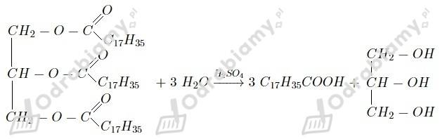

a)
Podziału tłuszczów na nasycone i nienasycone dokonuje się w oparciu o rodzaj wiązań pomiędzy atomami węgla w resztach kwasowych, wchodzących w skład cząsteczki tłuszczu. Jeśli wszystkie wiązania są nasycone, to mamy do czynienia z tłuszczem nasyconym. Przynajmniej jedno wiązanie nienasycone sprawia, że tłuszcz określamy jako nienasycony.
b)
Podziału tłuszczów na proste i złożone dokonuje się w oparciu o rodzaje reszt kwasowych, wchodzących w skład cząsteczki tłuszczu. Jeśli wszystkie reszty kwasowe są identyczne, tj. pochodzą od tego samego kwasu, to mamy do czynienia z tłuszczem prostym. Jeśli reszty kwasowe się różnią, tj. pochodzą od różnych kwasów, to tłuszcz określamy jako złożony.
To, że tłuszcze są hydrofobowe, oznacza, że ich cząsteczki nie oddziaływują z cząsteczkami wody. W związku z tym konsekwencją hydrofobowości tłuszczów jest ich nierozpuszczalność w wodzie. Przyczyną takiego stanu jest obecność trzech długich łańcuchów węglowych w cząsteczce tłuszczu.
Równanie reakcji:

Jedna cząsteczka trioleinianu glicerolu zawiera trzy wiązania nienasycone (po jednym w każdej z reszt kwasowych). Oznacza to, że w reakcji utwardzenia jednego mola cząsteczek tego tłuszczu wezmą udział trzy mole cząsteczek wodoru.
Masa molowa trioleinianu glicerolu wynosi 884 g/mol, zaś jeden mol wodoru zajmuje objętość 22,4 dm3.
Odpowiedź: Na utwardzenie 1 kg trioleinianu glicerolu potrzeba 76,02 dm3 wodoru.
Tłuszcze są substancjami niepolarnymi, tak samo jak niektóre witaminy. Sprawia to, że witaminy te rozpuszczają się w tłuszczach z dużą łatwością. Niepolarność tłuszczów wynika z obecności w ich cząsteczkach długich łańcuchów węglowych, które utrudniają tworzenie wiązań wodorowych.